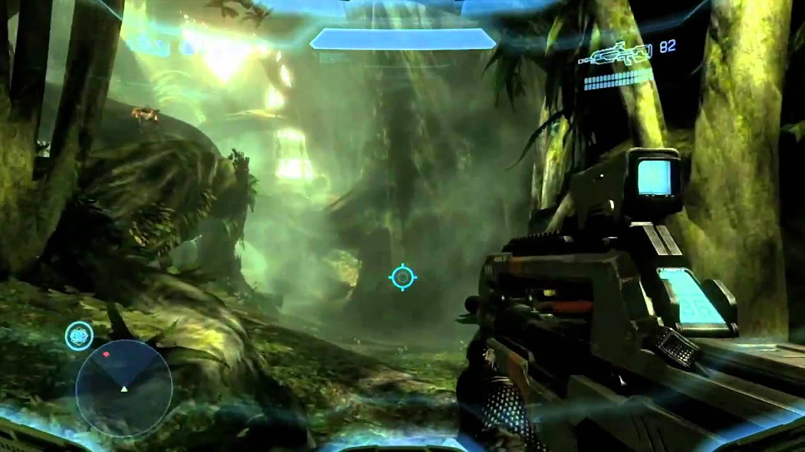
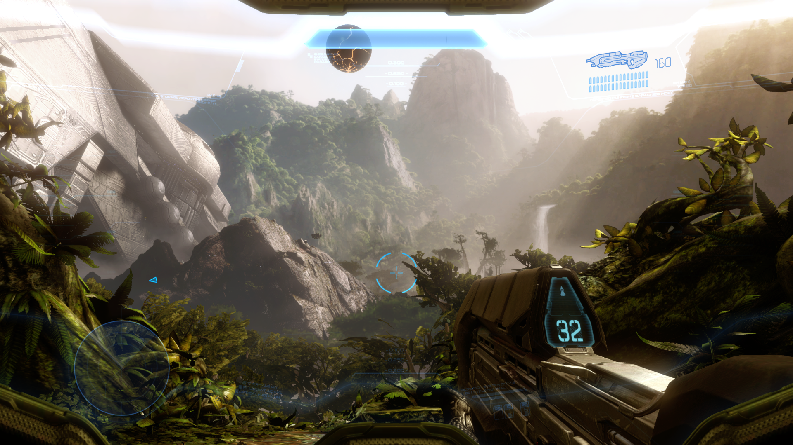
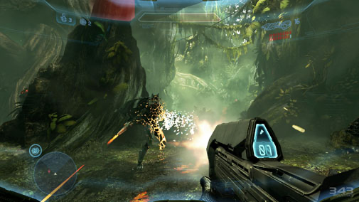
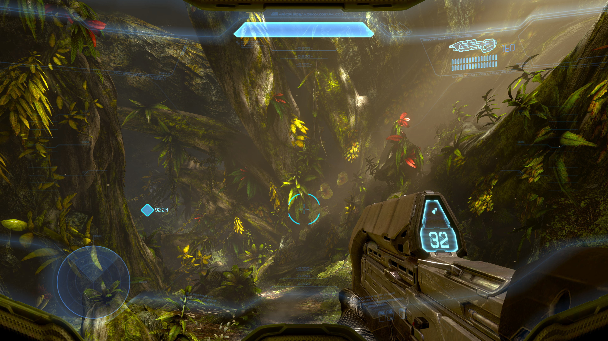
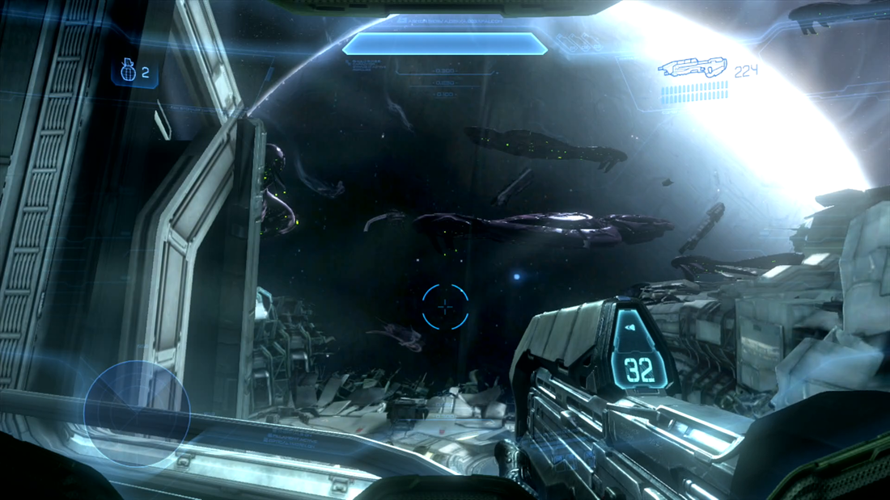
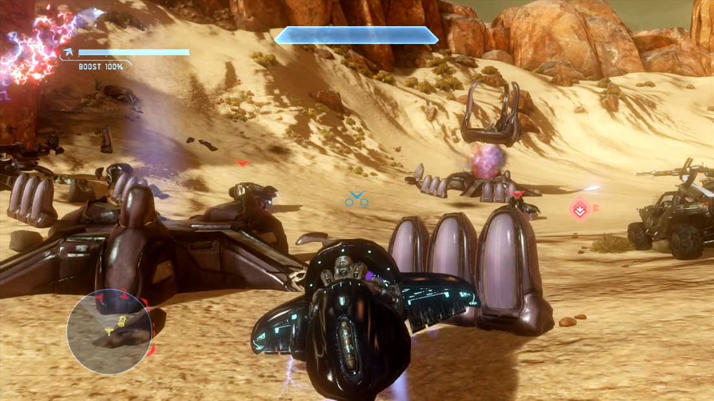

Ficha Táctica
Año de Lanzamiento: 2012
Desarrollador: 343 Industries
Consola: Xbox 360
Género: Disparos en primera persona (FPS)
Informe de Misión
Cuatro años y medio después de quedar a la deriva en el espacio tras la destrucción del Arca, los restos de la nave Forward Unto Dawn son arrastrados hacia el pozo gravitatorio de Requiem, un misterioso planeta artificial conocido como mundo escudo Forerunner. Cortana despierta al Jefe Maestro justo cuando una facción extremista del Covenant asalta los restos de la nave. Tras estrellarse en el interior hueco del planeta, ambos deben abrirse paso entre las tropas alienígenas y una nueva amenaza biomecánica: los Prometeos, guardianes sintéticos creados por la antigua civilización Forerunner.
Al explorar las profundidades de Requiem, liberan accidentalmente al Didacta, un antiguo líder militar Forerunner que considera a la humanidad una especie inferior e indigna del legado galáctico. Mientras intentan impedir que el Didacta utilice un arma de conversión masiva llamada el "Composidor" para digitalizar a la población terrestre, el Jefe Maestro debe enfrentarse a una tragedia personal: Cortana está sufriendo de "rampancia", un deterioro cognitivo irreversible. La campaña profundiza en la relación humana entre ambos personajes mientras luchan por detener la aniquilación de la Tierra.
Registro Visual





